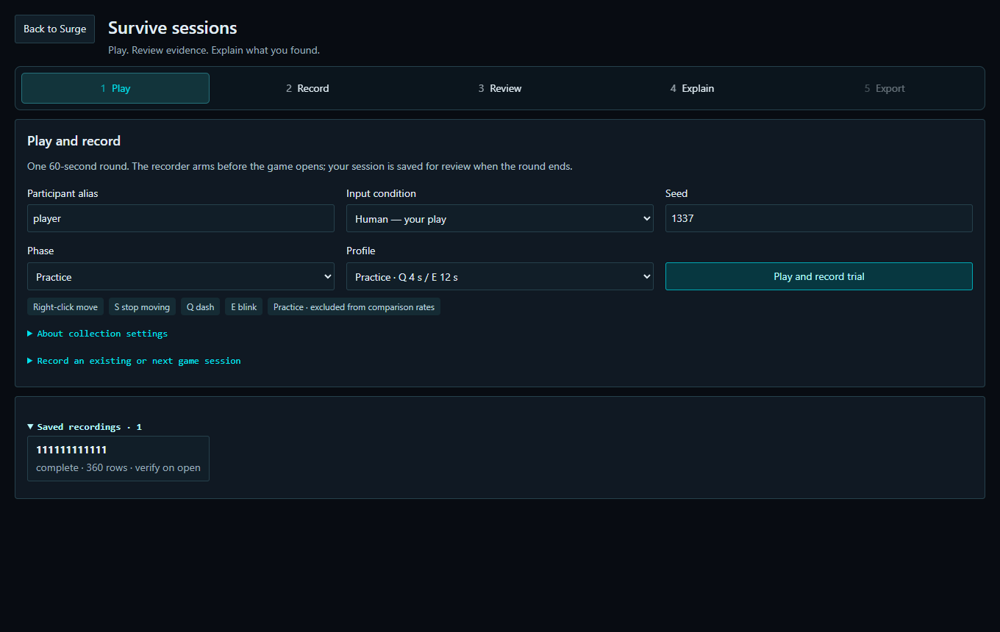

Surge
Resume release · 0.4.3Trace gameplay into evidence you can inspect and explain.
Surge records gameplay from its companion game, Survive, checks movement constraints, and connects findings to replay, source records and reports.
Windows x64 · Extract the entire ZIP, then open Surge.exe. Unreal, Python and Node installations are not required. The package is unsigned.
See the workflow
Five captured application screens. Use the steps below or play the two-minute guided tour. These are controlled test examples, not a continuous gameplay video.

Set up a round
Choose a movement profile and seed. Survive provides right-click movement, dashes, blinks and mixed attack patterns.
What this demonstrates
End-to-end engineeringUnreal gameplay, Python analysis and a React desktop interface.
Evidence integrityExact source references, fingerprints and retained report revisions.
Failure-aware designIncomplete observations remain visible; findings invite review.
Validation and limits
Validated on the development host; clean-machine acceptance pending
597 Python tests passed (one host symlink-capability skip), 56 desktop tests and 66 telemetry tests passed. All 66 page-layout samples and both standalone acceptance journeys passed. The clean Windows VM became unresponsive during qualification, so it has not earned a clean-machine pass.
Controlled scenarios do not establish a human baseline or real-world false-positive rate. Mechanically legal automation can produce no finding. Surge does not inspect League of Legends, interact with Vanguard, or enforce bans.